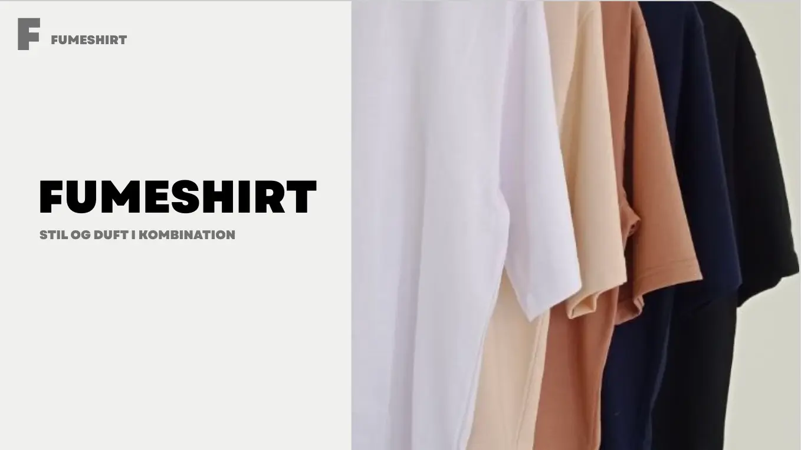
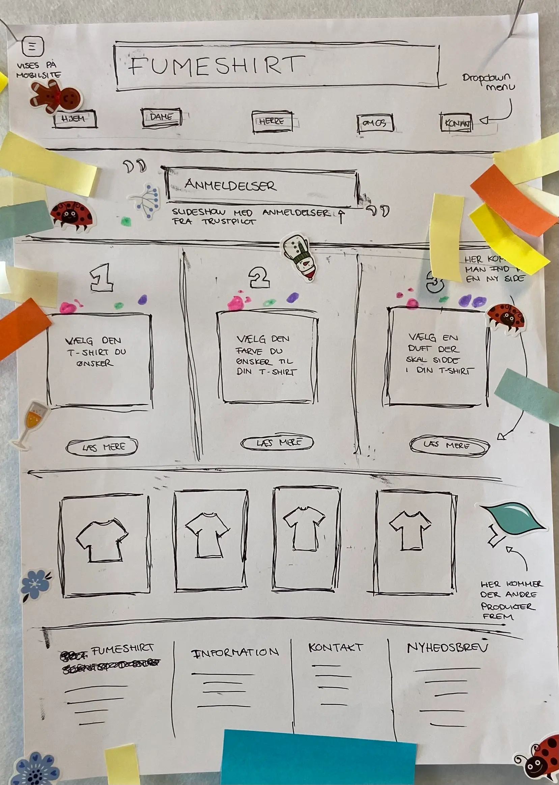
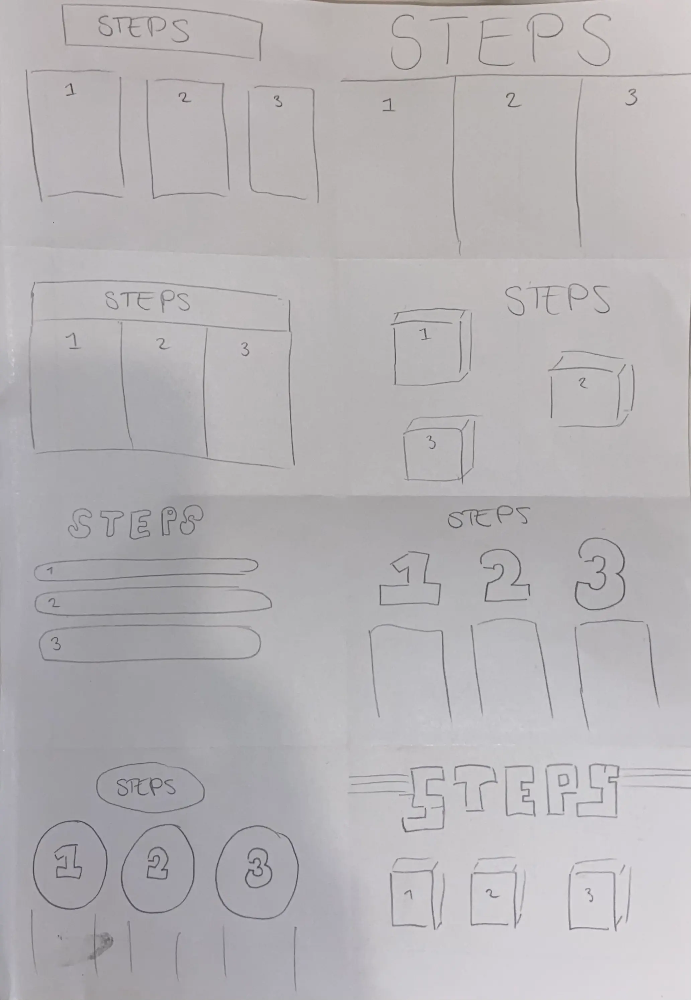

Grundlæggende ux
klik på computeren for link
PÅ temaet grundlæggende UX, blev vi introduceret til digitale brugergrænseflader og hvilke UI-metoder der skal bruges, for at designe og præsentere et produkt. Vi arbejdede også meget med forskellige researchmetoder såsom desk research, interviews, survey og observation. Vi fik herefter en forståelse for hvor vigtig forarbejdet er for ens slutprodukt. Hovedopgaven på dette tema handlede nemlig om, at udarbejde et website der sælger t-shirts, hvor jeg her i høj grad gjorde brug af disse metoder. Derudover beskæftigede vi os med skitser, lightning demos, prototyper og tests af websitet. Til sidst i forløbet sluttede vi af med, at præsentere en pitch af vores endelige resultat, foran en lærer og andre medstuderende.
pitch præsentationresearch
At lave en grundig research inden man starter projekt, var noget af det første vi arbejdede med på temaet. Her lærte vi omkring de forskellige metoder og hvad de hver især kan bidrage med til ens projekt. Research kan bl.a. bruges til at få en masse baggrundsviden om emnet inden man starter, som man eksemplvis kan få via desk research. En anden metode jeg benyttede mig af, var en survey, som er en metode der får mange forskellige holdninger, samt kan be- eller afkræfte en teori man arbejder med. Jeg benyttede mig også af et interview, som gav mig nogle flere idybdegående svar, som jeg kunne tage med videre til mit projekt. Tilsidst brugte jeg observations metoden til at obsevere brugerens adfærd og hvordan de forholdte sig til t-shirts i det offentlige rum. Her fandt jeg ud af, at der er mange der har brug for visuelt at se tøjet, samt mærke det, før de overvejer om de skal prøve/købe det. Tryk nedenfor for mere viden omkring mine brug af research metoder.
lightening demo
Vi blev i temaet introdceret til lightening demos, som man bruger i starten af projektet. Vi brugte det til at få ideer, hente inspiration fra andre hjemmesider og dermed tegne hvad man er blevet inspireret af.

solution sketch
Solution sketch, som ses på billedet nedenfor, er det endelige produkt i designprocessen. Det er et eksempel på hvordan dit site endeligt skal se ud.
prototype
Dette er et eksempel på min prototype, altså det jeg er kommet frem til efter alle processerne. Billedet er taget efter vi, til holdundervisning, testede vores prototype via et art museum.
crazy 8's
Her er et eksempel på hvordan min crazy 8's, som er en del af design sprint sketchen, ser ud. På denne måde kan man visualisere og arbejde med den samme ide, men på flere forskellige måder.
